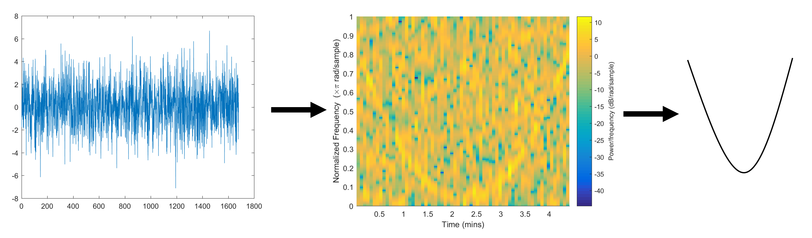
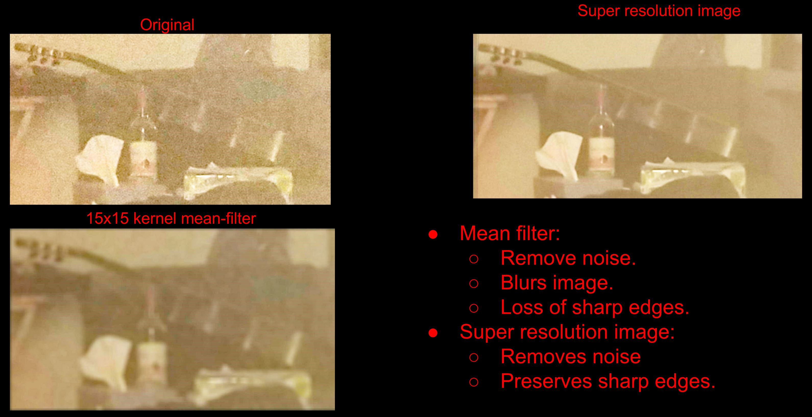
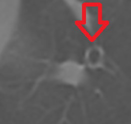

Click on the projects to see descriptions and images.
Master of Engineering Design Project: Machine Learning in Sabuncu Lab
August 2017 - Present
Image registration/optical flow of 3D brain MRIs: fast calibration & transformation into standard space. Utilized convolutional neural networks on modern machine learning frameworks PyTorch and TensorFlow.
Project Goal
Currently, 3D image registration is done with an optimization process, which is slow. Because the database of brain MRI scans is so large, the transformations can be memorized by a machine given the shape of a given brain. The goal is to speed this process up with a convolutional nerual networks so the process becomes one step instead of iterative, speeding up the process.
Expedition Technologies
Dec 2017 - Present
Used machine learning to classify 1D radar chirp emitters with an autoencoder neural network in TensorFlow. Fine tuned neural networks, and improved data preprocessing to increase accuracy and prevent over-fitting on classes with limited data. Scripted in python and bash, running code on AWS.
My work with the company was entirely building and perfecting a single model to classify radar emitters; even when those radars emitted signals that were different frequencies, frequency patterns, time lengths, and bandwidths.
Architecture Description
The architecture involved taking FFT's of the data, doing a couple convolutional filters on groups of them, and then inputting each FFT into a long short-term memory network (LSTM), one per time step. The LSTM states then learned how to interpret the signals. The output of the the LSTM is trained with an autoencoder, with the loss being the comparison with the original signal. Then, then network is trained by attaching the LSTM to several dense neural network layers. The network was able to achieve >95% test accuracy on the emitter classification.
This is the t-distributed stochastic neighbor embedding (tsne) viewing of the training data for the encodings of the dozen radar emitter classes. The data looks relatively separable.
This is the tsne of the test data. The encoder does not overfit, as the two look very similar.
Lockheed Martin
June 2017 - August 2017
Automated USPS driver monitoring for illegal/reckless driving using GPS data. Researched and wrote an image/signal processing program to recognize enemy radar chirps in electronic warfare.
Automated driver monitoring
Automated USPS driver monitoring for illegal/reckless driving using noisy GPS data. The program was designed to detect left turns and U-turns in the routes and map out their locations.
Cognitive radar classification
Researched and wrote an image/signal processing program to recognize enemy radar chirps in electronic warfare. The program receives a radar signal, transforms it into a spectrogram image, then filters that image and applies computer vision techniques to create recognizable features. A machine learning neural net then uses the processed image to classify incoming radar as different adversaries. Wrote and tested the program in C++ for industrial use after testing concepts in MATLAB. 
School Projects
Final projects for some my courses, demonstrated here with photos and video.
ECE 3140: Embedded Systems
The final project here was using the FRDM kinetis k64f to light up an LED display. The difficulty here involved programming the board to be able to transmit i2c signals.
ECE 3400: Robot Competition
In this class, a group of 8 students and I had a project of making a self navigating robot that could navigate a maze like that shown in the video below. The robot was able to send a radio signal of its current location as well as the location of an infrared emitter located on the maze.
ECE 4250: Super Resolution Imaging
For this project, our group took multiple images of my room, calibrated them, added them, and averaged them to obtain an image with more information than any single image. This was supported with some image SNR metrics. Here is a link to the presentation for more information.

Vision and Image Analysis Group: Research with Professor Anthony Reeves in Computer Vision
Jan 2016 - May 2017
Studying computer vision and algorithm optimization using the VisionX Computer Vision and Image Processing System with the end goal of recognizing tumors in CT scans of lungs and determining their coordinates. These programs were written using tools from the VisionX software and in C.
Identifying airways in lung CT scans and determining their orientation
This is one slice of a CT scan of the chest. The two darker lobes in the image are the lungs, and the white parts within them are mostly vessels and airways. These images were taken from The Cancer Imaging Archive [1]

This is a slice of a airway, zoomed in. The filled in circle is a blood vessel, and the hollow circle is an airway.
I am writing a program to differentiate between airways and air pockets, so that the overal program will be able to tell if the lung CT has air outiside of the airways and lung air sacs (alveoli). This diagram demonsrates what is meant by "orientation of an airway". Another program developed by the Vision and Image analysis group is able to point out locations of sphere shaped pockets of air within the lung, and their radii. Airways trigger this program and their locations are listed within the large list of locations of air pockets.An airway candidate can be determined by using moments analysis. Because a sphere intersecting with a cylinder (the assumed model of an airway) is a ring, this ring can be seen and interpreted by the program.


Canny edge detection in 3D
I wrote a program which has the purpose of creating a 3D boundary between two regions in a 3D image. This program takes in the gradient and performs non maximum suppression and thresholding with hysteresis on a 3D gradient file. This image is a slice of a noisy sphere generated using the VisionX software system for image processing and computer vision. On the left, a sphere added onto a background in a 3D image. In the center, that same sphere with added noise. One the right, the gradient magnitude of the image with added noise.

This image is a slice of the sphere, zoomed in, and demonstrating non maximum suppression to obtain a 1 pixel thick edge. On the left, the original image section, zoomed in. In the center, the same region after the applied non-maximum suppression. On the right, the image of the difference between the original and the image after the program (red pixels are the same as the original, green pixels have been removed by the program).

[1]The Cancer Imaging Archive (TCIA) citation
Clark K, Vendt B, Smith K, Freymann J, Kirby J, Koppel P, Moore S, Phillips S, Maffitt D, Pringle M, Tarbox L, Prior F. The Cancer Imaging Archive (TCIA): Maintaining and Operating a Public Information Repository, Journal of Digital Imaging, Volume 26, Number 6, December, 2013, pp 1045-1057.
[1]Data Citation
Grove, Olya, Berglund, Anders E., Schabath, Matthew B., Aerts, Hugo J.W.L., Dekker, Andre, Wang, Hua, … Gillies, Robert J. (2015). Data from: Quantitative computed tomographic descriptors associate tumor shape complexity and intratumor heterogeneity with prognosis in lung adenocarcinoma. The Cancer Imaging Archive. http://doi.org/10.7937/K9/TCIA.2015.A6V7JIWX
Leidos
May 2016 - Aug 2016
Helped Leidos develop their synthetic aperture and plenoptic processing capabilities. All projects were involving image processing in MATLAB.
Occlusion Penetrating Imaging
The goal of this image was to be able to take spy plane images, and track partially occluded targets. Taking multiple images of a scene, camera locations, and object distance, this program will stitch together the scene behind the occluding object (often foliage) by overlaying the images with the pixel displacement to match the distance given and the camera positions. I tested this algorithm by taking images on my own cell phone of occluded scenes, and calibrating them to eliminate rotation or translational inaccuracies. I wrote the calibration and stitching programs in MATLAB.
Source images, after rotation and translational calibration to overcome the jitter that comes with acquiring these images on a cell phone.
This video focuses the images at a specific distance, by moving them on top of each other and averaging the pixel values. Partially occluded objects can be made out because they are usually not occluded in every single image. The "College Park" text and building become much more clear behind the bush. The displayed video is the overlayed images with the depth given at the top of the image in millimeters.
3D Point Cloud Generation
This program takes images of an object taken from different angles and generates a 3D model. It detects distance to every object in an image based on pixel disparity from multiple images of the object and known camera locations using stereo vision type range calculation with kernel matching. I wrote the function to discover pixel disparity using phase shift in the frequency domain.
Source images of a lego truck
Corresponding generated 3D point Cloud
This Website
Jan 2017 - Present

I wrote the code for this website in html/css/js. It is available for viewing on github.
Biorobotics and Locomotion Lab
May 2015 - Aug 2015
Researched human balance while standing, walking, running, and turning using pressure sensitive force plates. The eventual goal of the project was to be able to understand how to make a walking robot by understanding how the center of mass of a human walking changed during the gait. Beginning to move in any direction was modeled after an upside-down pendulum, or inverse pendulum (before a person moved in any direction they would have to take a step in the opposite direciton to cause them to lean in the direction they would like to move in).